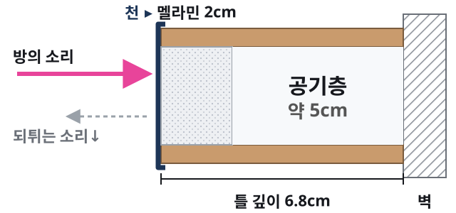
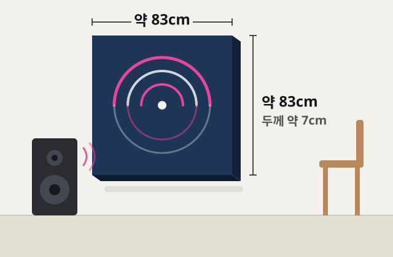
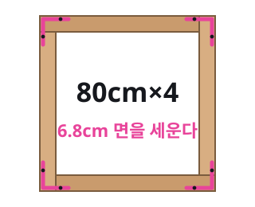
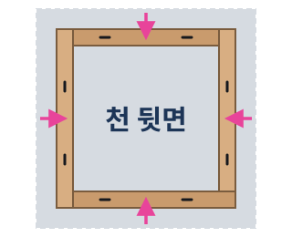
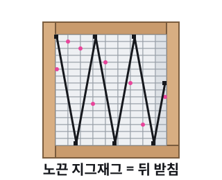
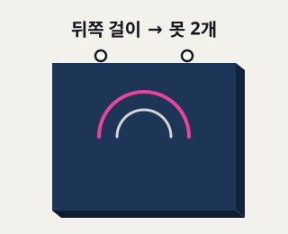

1 · 문제 구분
처음엔 우리도 순서를 잘못 잡았다
패널을 만들었으니 어디에 붙일지를 먼저 고민했다. 다시 물어보니 더 먼저 해야 할 질문이 있었다. 「어느 주파수 대역을 줄이고 싶은 건데?」 재료와 자리는 그다음이었다.
말끝이 오래 남는다
대화·촬영실에서 음성대역의 감쇠가 긴지, 여러 대역이 함께 남는지 본다. 이때 다공성 흡음은 한 후보지만 면적을 먼저 정하지 않는다.
소리가 빨리 되튀거나 떨린다
스피커 청취 자리의 초기반사와 평행 벽 사이의 플러터는 서로 다르다. 위치를 바꾸거나 반사면을 임시로 다뤄 본다.
특정 저음만 붕 뜬다
방의 저역 공진일 수 있다. 얇은 멜라민 블록 한 장이나 옆벽 거울 위치를 정답으로 삼지 않는다. 청취·스피커 위치와 저역의 시간 변화를 먼저 본다.
밖으로 새거나 옆집에서 들린다
방 안 흡음이 아니라 차음 문제다. 이 패널로 막는다고 약속할 수 없다.
전문가 통화「이 방에서 지금 어떤 소리가 얼마나 오래 남는가」부터 보자. 중·고역만 지나치게 줄이면 먹먹해지고 저음이 상대적으로 부푼 듯 들릴 수도 있다. 좋은 소리는 스피커·방 크기·목적·자리·볼륨·반사·흡음량이 함께 만드는 단체전이다.
2 · 공간과 소리
내 방에서 먼저 무엇이 남는지
방의 가로·세로·높이, 문과 창, 스피커와 듣는 자리부터 적는다. 휴대폰 치수 측정이나 LiDAR 공간 스캔은 출발점으로 쓸 수 있지만 근삿값이다. 다음으로 같은 기기와 자리에서 측정 앱이 제공하는 주파수응답과 대역별 감쇠를 남긴다. 앱이 그 결과를 제공하지 않으면 녹음과 듣기 기록부터 시작하고, 정밀 판단은 측정 마이크와 전문가에게 넘긴다.
읽는 법250–500Hz 부근, 500Hz–2kHz 부근, 저역이 각각 어떻게 남는지 살핀다. 이것은 문제를 찾기 위한 범위이지 모든 방의 목표 수치가 아니다. 작은 방의 저역을 RT60 숫자 하나로 단정하지 말고 주파수응답과 시간에 따른 감쇠도 함께 본다. 기기·앱·마이크 보정에 따라 값이 달라진다.
AI와 함께 보기방 크기·평면도 또는 스캔·방 사진·쓰는 목적·측정 캡처를 AI에 건네 「어느 대역이 상대적으로 오래 남고 무엇을 먼저 시험할까」를 물어볼 수 있다. 두께·면적·공기층·위치 제안은 측정으로 검증할 가설이지 시공 사양이나 방염 판정이 아니다. 사진의 개인 정보도 먼저 가린다.
계산값아래 계산기는 벽 면적과 DIY 예상 비용만 보여 준다. 입력한 치수로 필요한 패널 수나 흡음량을 처방하지 않는다.
계산값패널 한 장 앞면 약 0.69㎡(83×83cm), 한 장에 블록 약 140개, 1장 88,400원 기준. 문·창문 면적은 빼지 않았다.
3 · 조건이 맞을 때만
멜라민 패널이 후보라면
중·고역의 반사나 잔향을 줄이는 작은 시험이 필요할 때만 이 제작법으로 넘어간다. 저역 공진·차음 문제라면 여기서 사지 않는다. 멜라민폼의 두께·면적·공기층은 결과를 바꾸므로 정답으로 고정하지 않는다. 아래는 시험용 한 장의 규격과 2026-09-23 가격 예시다. 분홍 버튼은 확인한 가게 한 곳, 아래에는 다른 가게 검색 버튼을 두었다.

- 천
- 소리를 통과시키는 겉옷
- 멜라민
- 다공성 구조를 지나는 소리 에너지가 줄어든다. 어느 대역에 얼마나는 제품·두께·설치 조건에 따라 다르다
- 공기층
- 벽과 띄우는 간격도 흡음 특성을 바꾼다. 이 DIY의 약 5cm가 모든 방의 최적값은 아니다
- 한계
- 얇은 폼은 저역 공진 해결책으로 가정하지 않는다
방음이 아니라 흡음
이 패널은 방 안에서 도는 울림을 줄이는 후보일 뿐이다. 벽 너머로 새는 소리, 옆집 소리는 못 막는다. 그건 차음의 일이다.
재료 원리와 제품 보증은 별개
멜라민 오픈셀 폼의 다공성 흡음 원리는 세정용이라는 이름으로 사라지지 않는다. 그러나 일반 블록의 제조 편차와 주파수별 성능은 음향용 제품처럼 관리·보증되지 않는다. 공개된 음향용 수치를 이 블록에 대입하지 말고, 직접 전후를 재자. 건축물 용도와 설치 공간에 따라 방염 대상 여부가 달라질 수 있다. 영업장·다중이용업소 등 해당 기준이 적용되는 곳은 방염성능이 확인된 자재를 사용한다. 난로·조명 열 가까이 두지 않는다.
거울은 초기반사 시험의 한 방법
스피커의 측벽 초기반사가 문제일 때, 듣는 자리에서 거울 속 스피커가 보이는 옆벽을 후보로 시험할 수 있다. 음성 잔향이나 저역 공진을 위한 만능 위치는 아니다.

예상 총액 · 1장 · 배송비 포함
88,400원
- ① 프린트 천 100×100cm32,000
- ② 멜라민 블록 100개 × 217,400
- ③ 각목 80cm × 427,000
- ④ 다이소 부자재 7종 (매장가)12,000
가격 확인 2026-09-23 각 쇼핑몰 화면 · 다이소는 매장 가격 · 값과 품절은 바뀔 수 있다
규격만 맞으면 어느 가게든 된다. 분홍 버튼은 우리가 2026-09-23에 확인한 예시이고, 그 아래는 같은 검색어로 다른 가게를 여는 버튼이다.
①
프린트 패브릭 포스터
정사각 100×100cm 1장 · 주문할 때 내 그림을 올린다. 앞에서 보이는 건 가운데 약 83cm
32,000원
29,000 + 배송 3,000 · 마플
확인한 예시 · 마플 ↗검색어 패브릭포스터 100x100 · 다른 천이면 입에 대고 불어 바람이 지나가는지 본다
②
멜라민 블록 (매직블럭)
5×9×2cm 100개 1봉을 수량 2로 · 약 140개를 쓴다
17,400원
1봉 8,700 × 2 · 무료배송 · 11번가 최저가(판매처를 고를 때 크기 5×9×2cm 확인)
확인한 예시 · 11번가 ↗검색어 매직블럭 대형 100개 멜라민 스펀지 · 알리는 배송이 길고 크기가 제각각이라 규격을 꼭 본다
③
각목 (길이 재단 주문)
28×68mm, 길이 80cm × 4개 · 같은 길이라 톱질이 없다 · 6.8cm 면을 세워 쓴다
27,000원
6,000×4 + 배송 3,000 · 11번가 요요몰 · 옵션에서 28×68mm → 800mm
확인한 예시 · 11번가 ↗검색어 각목 사이즈재단 · 단면 28×68mm인지 꼭 본다
④
다이소 부자재 7종
매장 가격 기준. 다이소몰에서 사면 배송비가 따로 붙을 수 있다
12,000원
- 타카 (심 100개 포함)5,000
- 타카 심 6mm 2000개1,000
- L자 평철 4개1,000
- 목재용 나사 12·16mm1,000
- 만능 본드 120g2,000
- 액자걸이 6개1,000
- 다용도 노끈 3mm1,000
공구: 십자드라이버 · 커터칼 · 망치 · 줄자. 벽 못·핀은 벽 종류에 맞게 따로 산다
4 · 만들기
만든 뒤에는 임시로 걸기
전문가가장 어려운 건 재료가 아니라 블록을 붙들어 두는 일이다. 작은 블록이 가지런히 서 있어야 하고 흔들리면 안 된다. 가장 나은 건 큰 멜라민 판을 사서 틀 크기로 잘라 쓰는 것인데, 값이 많이 오른다. 이 한 장은 블록끼리 본드 점 + 뒤를 받치는 노끈으로 간다 — 걸어 보고 흔들리면 노끈을 더 촘촘히.
-

1틀 짜기80cm 각목 네 개를 6.8cm 면이 세워지게 놓고, 바람개비처럼 한쪽 끝이 옆 각목 옆면에 닿게 맞댄다. 맞닿는 면에 본드를 바르고, 뒷면 모서리마다 L자 평철을 나사로 조인다. 대각선 두 길이가 같으면 직각이다. 바깥 크기 약 83×83cm.
-

2천 씌우기천을 그림이 바닥을 보게 펴고, 틀을 철물 쪽이 위로 가게 가운데 올린다. 천을 옆면으로 감아 뒷면에 타카를 박는다. 변마다 가운데부터, 마주 보는 쪽을 번갈아 당긴다. 모서리는 선물 포장처럼 접고, 철판 위는 피해서 박는다. 천 여유는 한 변에 약 8.6cm(옆면 6.8 + 뒷면 1.8)라 빠듯하다.
-

3블록 채우기틀을 뒤집은 채로 안쪽(약 77×77cm)에 블록을 천에 닿게 놓아 빈틈없이 깐다. 블록 옆면끼리, 가장자리 블록은 틀 안쪽 벽에 본드를 점점이 찍는다. 끝 줄은 커터칼로 잘라 채운다. 천에는 본드를 바르지 않는다 — 앞면에 번진다. 다 깔면 블록 바로 뒤 높이에서 틀 안쪽 벽에 노끈을 지그재그로 걸고 타카로 고정한다. 블록이 뒤로 빠지지 않게 받치는 끈이다.
-

4임시로 걸기본드는 하루 말린다(환기). 윗변 뒤쪽에 액자걸이 2개를 박고, 약 3kg대(계산값)를 버티는 벽 못이나 핀 2개에 건다. 블록 뒤로 약 5cm 공기층이 생긴다. 진단한 반사면에 먼저 시험하고, 고정 방식과 벽 하중을 확인한 뒤 재측정 결과에 따라 위치를 바꾼다.
5 · 재측정과 수정
같은 조건에서 다시 재고, 달라진 대역을 본다
설치 전과 후에 같은 휴대폰·앱·마이크 위치·소리 크기·가구 상태를 유지한다. 가능하면 같은 측정 소리로 두세 번 반복하고 주파수응답과 대역별 감쇠 화면을 나란히 둔다. 어느 대역이 얼마나 달라졌는지, 듣기 목적에 도움이 됐는지 함께 본다.
휴대폰으로 첫 비교
치수와 사진, 가능한 앱의 주파수응답·대역별 감쇠를 전후로 저장한다. 앱이 감쇠를 보여 주지 않으면 같은 자리의 음성·박수 녹음으로 듣기 차이를 기록하되, 박수 크기가 달라진 결과를 정량 수치처럼 말하지 않는다.
더 정확히 필요하면
측정 마이크와 REW 또는 전문가 측정을 쓴다. 작은 방 저역은 RT60 하나보다 응답과 waterfall/decay를 같이 본다. 스마트폰은 첫 진단과 비교 도구이지 전문 장비의 대체품은 아니다.
결과에 따라 한 가지만 바꾸기
목표 대역이 줄고 듣기도 편해졌으면 멈춘다. 고역만 줄어 먹먹하면 면적을 줄이거나 위치를 바꾼다. 저역 문제가 그대로면 패널 수를 늘리기보다 원인을 다시 본다. 한 번에 한 조건만 바꿔 재측정한다.
아직HAM MEDIA가 재 본 전과 후는 아직 없다. 먼저 해 본 분이 결과를 보내 주면, 개인 정보 없이 이 자리에 나란히 적는다 — 결과 보내기
6 · 기록 가져가기 · 다음 일
고른 것, 뺀 것, 결과를 내 손에
여기에 적은 것은 이 브라우저에만 남는다. HAM MEDIA 서버로 가지 않는다. 파일로 받거나 복사해서 내 AI(ChatGPT·Claude)에 붙여 넣으면, 다음 일을 거기서 이어 갈 수 있다.
이 일 다음에 오는 일
울림을 줄이고 나면 보통 이런 일이 이어진다. 다른 별에서 이어서 볼 수 있다.
근거
근거
근거 — BASF 멜라민폼 자료는 재료의 다공성 흡음 원리를 설명하지만 이 세정용 블록의 성능표는 아니다. 작은 방의 대역별 잔향과 저역 해석은 REW RT 안내와 waterfall 안내를 참고했다. 휴대폰 측정의 한계는 NIOSH 자료를 참고했다. 방염 대상은 찾기쉬운 생활법령정보에서 확인한다. 가격은 2026-09-23 각 쇼핑몰 화면. HAM MEDIA는 이 패널을 설치해 전후 성능을 아직 측정하지 않았다.